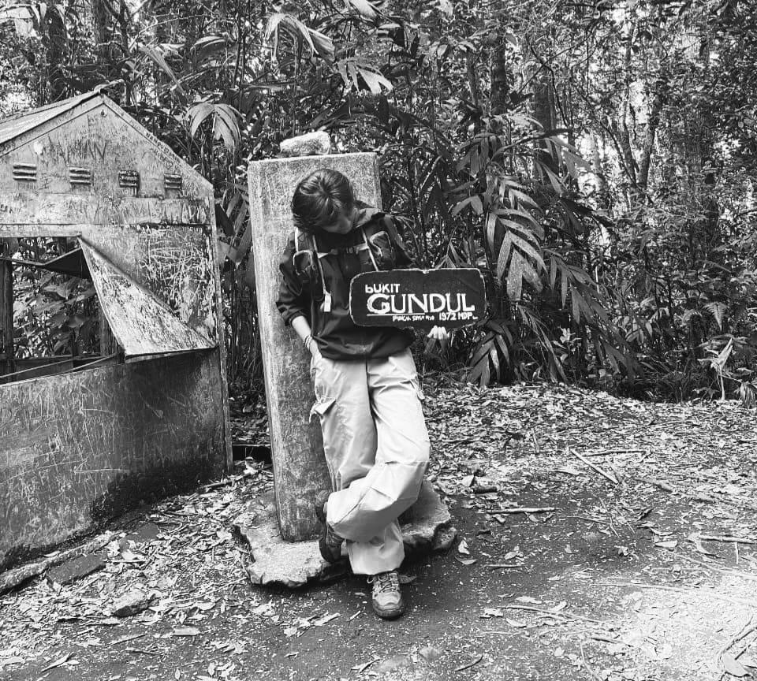
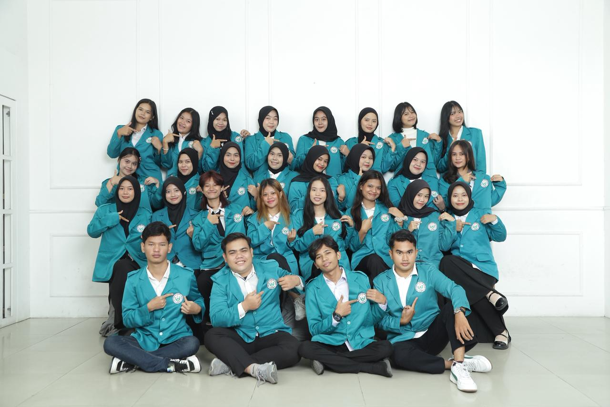
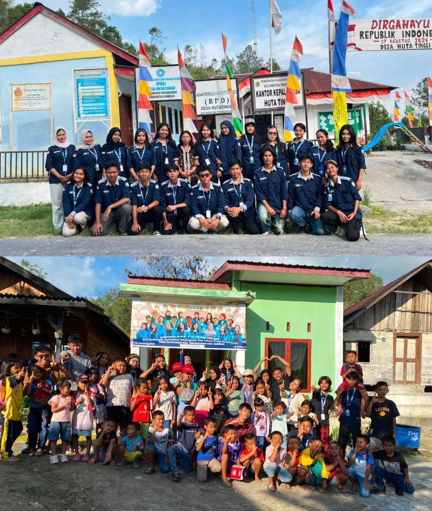
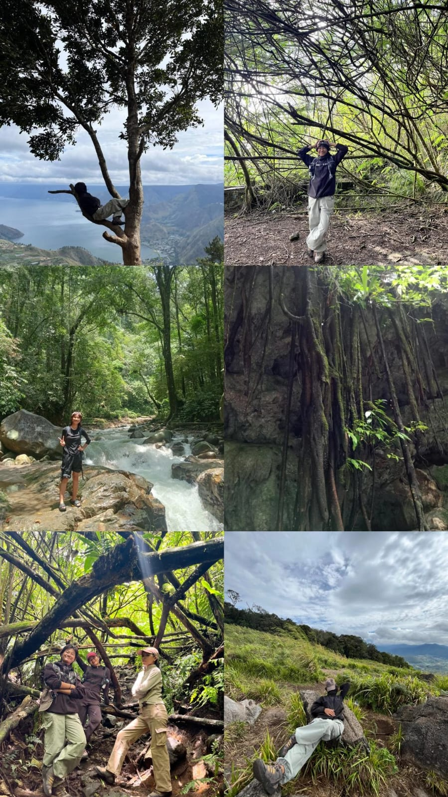

Hi, I’m Deby Ayu Windari S, 21 years old, and a Mathematics Education student at Universitas Negeri Medan. I’m a curious soul who loves to wander, explore, and experience new things. My curiosity often leads me to places, ideas, and experiences I’ve never encountered before. I value freedom and believe life becomes more interesting when you stay open to new experiences, new places, and unexpected adventures.

Three little things that shape the way I learn, create, and explore.
I enjoy asking questions, learning new things, and finding my own way to understand them.
I like turning ideas into something real, from educational work to digital projects and small experiments.
New places, new experiences, and a little uncertainty are often where the best stories begin.
A few chapters from my academic, community, and personal journey.

My journey began with a curiosity to understand how things work and why they happen. As a Mathematics Education student, I continue to learn, question, and discover new ways of seeing things. For me, learning is not only about finding the right answer, but also about enjoying the process of finding it.

For nearly two months, I lived and worked with the community of Huta Tinggi Village, Samosir, through our “Desa Cerdas” program. We carried out various activities to support the community, especially the children, through learning and creative activities.One of our main projects was creating a simple reading corner at the Huta Tinggi Village Head Office. This experience taught me about teamwork, adapting to new environments, and how small efforts can create meaningful experiences.

I have always been drawn to new places, new experiences, and the unknown. I love wandering, exploring, and seeing where my curiosity takes me. Whether it is a new place, a new challenge, or a mountain trail, every journey gives me a story to remember.
I do not always know where a new path will lead, but I enjoy discovering what is waiting along the way.